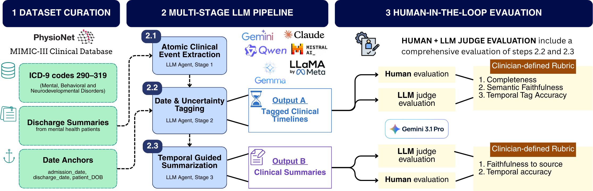
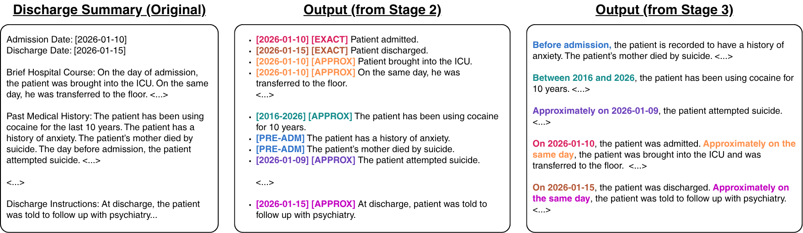

Mental health care often requires clinicians to reason over patient journeys: longitudinal patterns of symptoms, diagnoses, treatments, behaviors, social context, and responses to care. Yet these journeys are rarely documented as explicit timelines. Clinically important temporal information is embedded in unstructured discharge narratives, where events may be repeated, narrated out of order, or expressed through vague and relative time references.
We present CliniCIRCA, a multi-stage large language model (LLM) framework for Calendar-anchored, Imprecision-aware Reconstruction of Clinical Annals. CliniCIRCA decomposes patient-journey reconstruction into three stages: extracting atomic clinical events from raw discharge summaries, assigning calendar-grounded temporal labels with explicit uncertainty, and rendering the verified timeline as a date-grouped clinical summary. This makes temporal reasoning inspectable instead of hiding it inside a single summarization step.
From 14,882 MIMIC-III mental-health-coded admissions, we construct a benchmark of 52 discharge summaries on which CliniCIRCA produces 15,891 temporally tagged events. Clinician-guided annotation corrects 629 errors, producing verified gold-standard timelines that drive a summarization stage compressing each source 1.52× into a date-grouped chronological record. Scaling the framework to 1,000 silver-standard timelines, we find that instruction tuning on them generally improves five open-weight models across event extraction, temporal tagging, and summarization, compared with zero- and few-shot prompting.
Discharge summaries synthesize a patient's prior history, hospital course, and outcomes into a single narrative, which makes them a rich source for reconstructing patient journeys. Their temporal structure, however, is largely implicit. Three gaps motivated CliniCIRCA.
Structured EHR timestamps reflect when information was documented or billed: a diagnosis code is dated to the encounter, not to disease onset. The real chronology lives in free text, narrated out of sequence or anchored only by phrases like “2 days prior to admission” or “remote history.”
Under Engel's biopsychosocial model, a psychiatric course is shaped by medication use, trauma, social history, and daily functioning, as well as by diagnoses and procedures. A narrow schema omits events that define an individual's course, while an exhaustive one quickly becomes impractical.
Prior timeline systems often represent time as a single relative offset, so vague events are either left unmodeled or forced into a precise timestamp. Summaries generated directly from the note inherit its implicit chronology and risk presenting a resolved condition as active.
CliniCIRCA is a sequential framework of three LLM stages. Each stage receives the previous stage's output and has a single main task. Raw discharge summaries from MIMIC-III v1.4 go in without chunking, section parsing, or normalization. Three structured fields (date of birth, admission date, and discharge date) serve as temporal anchors.

Every event in Output A carries a calendar date (or range) and one of four certainty tags. Only explicitly written dates are tagged [EXACT]. Inferred or relative dates resolve to [APPROX] at the coarsest defensible granularity, such as year-only when only a year is recoverable.

A date is written in the event text itself.
No written date, but the event resolves to an anchor or to a relative offset from one.
Framed as prior to, or continuous through, this admission: history, “status post,” demographics, undated chronic states.
A guardrail used only when none of the above applies and the timing genuinely cannot be determined.
Share of events by temporal tag in CliniCIRCA outputs on the 52-note benchmark. Most events have timing that can be recovered only approximately, and a single-timestamp representation would erase that uncertainty.
Most candidates extract events near the rubric ceiling, but Temporal Tag Accuracy ranges from 2.00 to 4.83. Gemini 2.5 Pro ranks among the top candidates on every dimension and is frozen as the single agent that advances to Stage 3.
Rendered from the verified timeline by Gemini 2.5 Pro, Stage 3 summaries cut reading burden by about a third while preserving dates, tags, and uncertainty.
Per-note reduction: 31.5% mean, 33.8% median. MEDCON F1 against the timeline: 0.599.
The calibrated Gemini 3.1 Pro judge agrees strongly with clinician-adjudicated labels on correct content but over-flags rare errors.
On summaries, the judge flagged 262 errors and humans upheld 39. Agreement on whether a summary contains any error is still substantial (κ = 0.77; Spearman ρ = 0.77 on error counts).
We scale the frozen pipeline to 1,000 admissions disjoint from the gold set (750 train / 100 validation / 150 test). We then compare zero-shot prompting, three-shot prompting, and LoRA instruction tuning across five locally deployable open-weight models from 7B to 35B parameters.
Silver beats gold-only. Across all three tasks and all five models, tuning on silver timelines yields higher gold-set scores than tuning on the 52 gold examples alone. For example, Mistral-24B reaches 0.847 on event extraction versus 0.715 with gold-only tuning. This reflects the coverage and volume of the silver set, not higher label quality, so the gold set remains the independent benchmark.
CliniCIRCA treats patient-journey reconstruction as a set of separable decisions: what happened, when it happened, and how it should be rendered for review.
The summary is a readable rendering of an auditable timeline, not a fresh compression of the note. Each claim stays linked to event-level evidence, and each stage can be evaluated on its own.
Automated judges agree with clinicians on most correct events but are less reliable on rare errors, particularly pre-admission medications and date granularity. Trustworthy reference labels still require clinician adjudication.
1,000 pipeline-generated examples improved every model on extraction and summarization, and four of five on temporal tagging. This offers a practical route to small, locally deployable models without labeling an entire corpus.
Built on MIMIC-III under PhysioNet's credentialed access. Summaries are meant to complement, not replace, the source record, especially for safety-relevant content such as suicidality or medication timing.
@misc{zhang2026clinicirca,
title = {CliniCIRCA: A Modular LLM Framework for Constructing Longitudinal
Mental Health Patient Journeys from Raw EHR Narratives},
author = {Zhang, Aiwei Ivy and Ishfaq, Nimra and Chandra, Mohit and
Alvarez Lesmes, Santiago and Coscia, Adam and Moon, Khatiya Chelidze and
Ding, Xiaohan and De Choudhury, Munmun},
year = {2026},
note = {Under review}
}